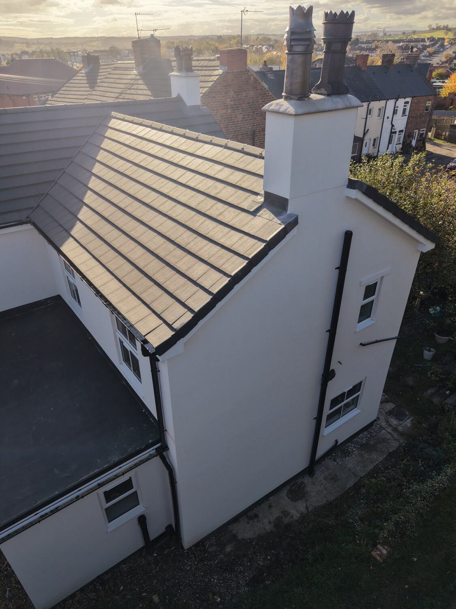

A family run business since the early 80’s.
Up to the present day we are still serving local people with high quality and cost effective workmanship.
Over 30 years experience in the trade.

Manterfield’s was originally established in the early 1980s by Craig’s father, Colin Manterfield. Craig joined the company in 1989 straight after leaving school, learning his craft along the way. Although building techniques and the industry have changed over the years, we’ve never lost sight of what matters most: our family values, trusted relationships and commitment to our community.
We are proud to highlight that six members of our current team have been part of the Manterfield workforce for over 15 years. Having joined us many years ago as apprentices, they were trained in-house, developing their skills and experience as part of the Manterfield family. Their loyalty and dedication reflect the values we have always stood by.
Our polite, hardworking team take genuine pride in their work and will always look after your home as if it were their own. Every project is tailor-designed to meet the highest standards, with customer satisfaction at the core of everything we do. Our reputation is backed by decades of positive feedback via our Google reviews.
Directors
Craig Manterfield
Runs the Construction & Roofing Divisions.
Wayne O’Donnell
Our Site Manager, appointed a director in 2020 after many years working for the Company.

Our pledge to you
Reliable contractors who charge a fair price and show up when they say they will can be hard to find. We’re here to change that. Feedback across the industry shows that the biggest headache for customers is the stress and delays caused by having to organise separate trades themselves—from electricians and plumbers to joiners and plasterers—which often adds weeks of unnecessary downtime.
What sets us apart is our decades of hands-on project management experience. Our qualified, multi-skilled team handles every step of the process, coordinating the entire schedule seamlessly from start to finish. No matter the scale, we are equipped to handle everything from small home repairs to complex structural renovations and commercial builds.
Choosing the right builder shouldn’t be a gamble. We don’t just promise quality—we prove it through regular, independent site inspections carried out by the Federation of Master Builders. We are proud to have maintained our accreditation for 25 years! Trading Standards endorses the Federation of Master Builders through their joint Trading Standards Checked partnership, which ensures every listed contractor undergoes rigorous vetting. We also have long-standing working relationships with local authorities, including Barnsley, Leeds, Wakefield and Sheffield councils, reflecting our experience working across the region.
- One highly skilled, experienced team project managing the entire schedule seamlessly, saving you time, hassle, and stress.
- Bespoke quotes, tailored to you. From planning permission and architect drawings to the final build, Craig & Wayne are always on hand for a friendly chat and honest, experienced advice.
- Fully insured & guaranteed work. We give you complete peace of mind from day one—why risk anything less?
- Federation of Master Builders approved. Independently inspected and committed to ongoing training, ensuring every project meets the highest standards and current building regulations.
- Respectful of your home. Our lads are clean, polite, and careful around your property, pets, and possessions—treating your home as if it were their own.
The Rise of Rogue Traders
Protecting Homeowners: What to Look Out For When Choosing a Builder
The dangers of using uninsured, inexperienced or non-compliant contractors can leave homeowners facing expensive repairs, unfinished projects and unnecessary legal complications.
At Manterfield Building & Roofing Limited, over 30% of our entire workload last year was dedicated to rectifying poor workmanship and repairing work left behind by rogue operators.
Unfortunately, we see the consequences first-hand. This is why we believe choosing a contractor should involve far more than simply comparing quotations. Experience, qualifications, insurance and reputation all matter.
The Importance of Building Regulations and Structural Compliance
Unapproved structural work can create significant problems further down the line, particularly when selling or remortgaging a property.
Buyers, solicitors and mortgage lenders may request evidence that relevant work complies with building regulations. Missing approvals or documentation can result in delays, additional expenses and complications when trying to complete a sale.
Without the appropriate building regulations approval or supporting documentation, homeowners may face difficulties satisfying buyers and mortgage lenders, potentially affecting the value and saleability of their property.
We have witnessed too many real-life examples of homeowners being left to deal with these problems after work has been completed incorrectly.
Beware of Prices That Seem Too Good to Be True
An unusually cheap quotation can sometimes conceal poor-quality materials, inexperienced labour, inadequate insurance or unexpected additional costs further down the line.
Be particularly cautious of contractors requesting substantial upfront payments without providing clear contractual terms.
Before committing to any building or roofing project, always insist on:
- A detailed written quotation.
- A clearly defined scope of work.
- Confirmation of appropriate insurance.
- An agreed and transparent payment schedule.
- Evidence of relevant experience and previous work.
Our Advice: Choose Quality, Not Just Price
Your home is one of your biggest investments. Choosing the right contractor from the outset can save considerable stress, expense and disappointment.
At Manterfield, we believe in doing things properly, providing honest advice and delivering workmanship our customers can have confidence in.
Our Values
Our Guiding PrinciplesProactive
We overcome challenges and find sustainable solutions through proactive solutions.
Professional
We behave in a professional manner at all times.
Pride
We take pride in all we do and who we are.
Passion
We have a passion for safely delivering quality workmanship.
Our team of expert tradesmen is capable of just about any general building job.
Whether it is for your home or business, big or small.
Explore our services- House renovations and alterations
- Loft and garage conversions
- Single and multi-storey extensions
- Joinery and windows
- All kinds of roofing work
- Ground works / Block Paving / Flagging
- Domestic & Commercial
- Landscaping